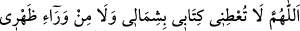

“Allahım! Dostlarının yüzlerinin ak olduğu günde, nûrunla benim yüzümü de ağart.
Düşmanlarının yüzlerinin karardığı günde, günahlarım sebebiyle yüzümü karartma.”
Sağ kol yıkanırken:
“Allahım kitabımı, sağımdan ver ve hesabımı kolay eyle.”
Sol kol yıkanırken:
“Allahım! Kitâbımı solumdan ve arkamdan verme.”
Başı meshederken:
“Allahım! Saçımı ve derimi cehenneme haram et, senin gölgenden başka gölge
olmayan günde beni arşının gölgesi altında gölgelendir. Beni rahmetinle kapla,
üzerime bereketini indir.”
Kulakları meshederken:
“Allahım! Beni sözü dinleyen ve en güzeline uyanlardan eyle.”
Boynu meshederken:
“Allahım! Benim boynumu cehennemden âzâd et.”
Sağ ayak yıkanırken:
“Allahım! Ayakların kaydığı günde, ayağımı sırat üzerinde sâbit eyle.”
Sol ayak yıkanırken: